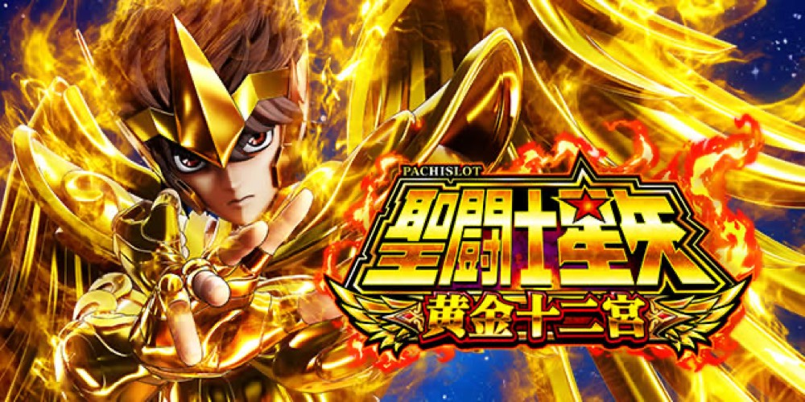

L聖闘士星矢 黄金十二宮
十二宮を突破し、SAGA BATTLEと千日戦争へ。
- 導入
- 2026年11月
- メーカー
- サンスリー
- 分類
- パチスロ
主要スペック
2026年11月2日導入のスマスロ。10Gの白羊宮から9人の黄金聖闘士へ挑み、エクストララウンド、SAGA BATTLE、上位AT『千日戦争』へ進む実機の順番を専用演出で体験できます。
- CZは設定1約1/214.4〜設定6約1/200.3
- 黄金聖闘士バトルはVストック込みで勝利期待度約76%
- SAGA BATTLE成功期待度約59%・千日戦争継続期待度約88%
L聖闘士星矢 黄金十二宮の見どころと計算条件
2026年11月2日導入のスマスロ。10Gの白羊宮から9人の黄金聖闘士へ挑み、エクストララウンド、SAGA BATTLE、上位AT『千日戦争』へ進む実機の順番を専用演出で体験できます。
スマスロ 聖闘士星矢を数字で早分かり
WHO ARE YOU？／影ノ襲来からBattle of ZODIAC、千日戦争までの流れと、設定ごとの結果差を固定レートで比較できます。
30秒で分かるスマスロ 聖闘士星矢
白羊宮10Gから9人の黄金聖闘士を約76%で撃破し、エクストララウンド、約59%のSAGA BATTLE、約88%継続の千日戦争へ進む実機順の段階型です。
こんな遊び方に向いている
- 黄金聖闘士ごとの30G＋継続PUSHを体験したい
- SAGA BATTLE約59%を自分で判定したい
- 千日戦争の上乗せ・BONUS・終了後100Gを見たい
遊ぶ前に確認したいこと
- 天秤宮・人馬宮は通常対戦相手として数えない
- 通常バトルはVストック込み約76%
- 上位報酬の出現比率は体験用の代表振り分け
CZ・AT初当りを設定別に反映
CZ合算は設定1約1/214.4から設定6約1/200.3、AT初当りは設定1約1/364.2から設定6約1/310.5です。設定6のCZが設定5よりわずかに重い点も公開値どおり反映します。
START時に設定1〜6を均等抽選し、結果とランキングに今回の設定を表示します。
2種類のCZと10GのWHO ARE YOU？
実機のCZは『WHO ARE YOU？』と『影ノ襲来』。WHO ARE YOU？は10Gで、小役2連続や強い小宇宙パターンが突破契機です。小宇宙ポイントや最大6周期の周期抽選からATを目指します。
サイトではCZ合算確率と代表成功率50%で1回のPUSHへまとめます。CZごとの内部状態、小役別の細かな書き換え率は公開情報が揃うまで固定推測を加えません。
白羊宮から9人の黄金聖闘士へ
AT開始時は白羊宮の導入ムービー10G。続いて金牛宮アルデバラン、双児宮、巨蟹宮デスマスク、獅子宮アイオリア、処女宮シャカ、天蠍宮ミロ、磨羯宮シュラ、宝瓶宮カミュ、双魚宮アフロディーテの順で挑みます。天秤宮と人馬宮は黄金聖闘士との通常対戦ではなく特殊な宮として扱われます。
各セットはAT30G＋黄金聖闘士バトル4Gまたは5G。バトル勝利期待度はVストック込み約76%で、小役成立なら勝利です。サイトでは各宮を30G消化後のPUSHで判定します。
星輝の加護・Vストック報酬
勝利後の4G突破エピソードから1Gの『星輝の加護』へ進むことがあり、Burning、COSMO BOOST、V GET CHALLENGE、Phoenix V GET CHALLENGEなどでVストックを狙います。
シミュレーターでは通常撃破、Vストック、星輝の加護を代表報酬として表示します。小役の停止形やアイコン昇格、Vストック消費順までは個別再現していません。
エクストララウンドとSAGA BATTLE
9人撃破後はエクストララウンドへ進み、終了後のエピソードを経て4Gの最終決戦SAGA BATTLEへ。小役成立で勝利、成功期待度は約59%です。
以前の自動成功モデルを廃止し、4Gカウント後のPUSHで約59%を判定します。失敗時は通常AT終了、成功時だけ千日戦争へ進みます。
千日戦争と上位BONUS
上位AT『千日戦争』は純増約6.6枚/G、1セット30G＋α、Vストック込みの継続期待度約88%。継続バトルは4Gまたは5Gです。
星輝の加護によるゲーム数上乗せ、約300枚の聖闘士星矢BONUS、初期1000枚の1000BONUS、BONUS中の金牛激震を代表報酬へ反映します。敗北時は20Gのエンディングと通常100G＋αの引き戻し区間を簡易表示します。
固定レートと収支の条件
- 約31.3G/50枚・1,000円46枚貸し・5.2枚交換で固定
- 設定1基準の平均AT投資目安は約12,600円
- コイン単価は設定1の参考値約3.8円として表示
- 19,000枚到達時はコンプリート表示
平均Gと投資目安の計算
掲載するBattle of ZODIAC初当り約1/364.2は設定1基準です。当サイトでは50枚あたり31.3G、1,000円46枚貸しの固定条件から、設定1基準の平均投資目安を約12,600円と計算します。
シミュレーターでは設定1〜6を均等抽選します。設定1〜6で公開されている初当り値を個別に使います。公開されていない特化ゾーン・上位到達率の設定差は加えません。 換金は5.2枚交換で固定し、結果とランキングに設定を表示します。
シミュレーション結果の見方
当るまでWHO ARE YOU？／影ノ襲来・Battle of ZODIACまでのゲーム数
設定設定1・2・3・4・5・6から抽選された今回の設定
上位到達最終決戦 SAGA BATTLEと千日戦争への到達
最終収支差枚と5.2枚交換の収支目安
結果は自動で「マイ記録」に保存され、同じ機種を何回試したか、最高収支、勝率をあとから確認できます。
簡易シミュレーターについて
WHO ARE YOU？／影ノ襲来・Battle of ZODIAC・千日戦争の流れを固定条件で体験できます。JavaScriptを有効にすると、この位置にシミュレーター、演出、マイ記録、機種別ランキングが表示されます。
結果は娯楽・確率理解のための参考表示です。金銭的価値や交換価値はなく、実際の勝敗や収支を保証しません。18歳未満の方の利用はお控えください。
スマスロ 聖闘士星矢のよくある質問
スマスロ 聖闘士星矢はどんな台？
2026年11月2日導入のスマスロ。 CZは設定1約1/214.4〜設定6約1/200.3が主な確認ポイントです。
スマスロ 聖闘士星矢の平均投資目安は？
設定1基準のBattle of ZODIAC初当り約1/364.2と、50枚あたり31.3G・46枚貸しの固定条件から、平均12,600円を目安として表示します。実際の設定や遊技状況で結果は変わります。
設定とゲームの流れはどう抽選する？
開始時に設定1・2・3・4・5・6から1つを均等抽選し、WHO ARE YOU？／影ノ襲来、Battle of ZODIAC、最終決戦 SAGA BATTLE、千日戦争の順で到達を判定します。設定は最終結果とランキングに表示します。
収支はどう計算する？
1,000円46枚貸し・5.2枚交換の固定条件で投資、換金、収支目安を計算します。実店舗の再プレイ、持ちメダル、端数処理は含みません。